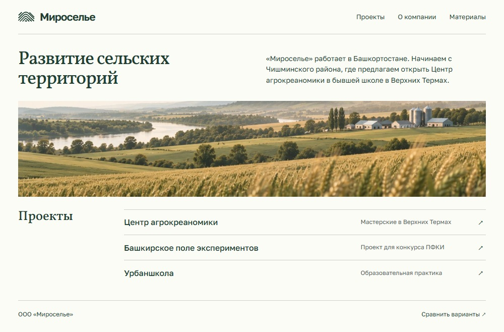
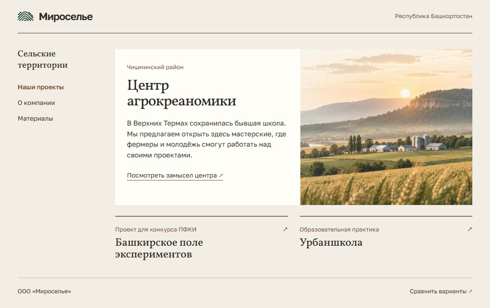

Два варианта главной
На действующий сайт ↗Панорама
Поле во всю ширину страницы. Под ним компактный список проектов, начиная с Центра агрокреаномики.

Открыть «Панораму» ↗Полевой журнал
На первом экране замысел Центра и фрагмент того же поля. Ниже две ссылки на образовательные проекты.

Открыть «Полевой журнал» ↗